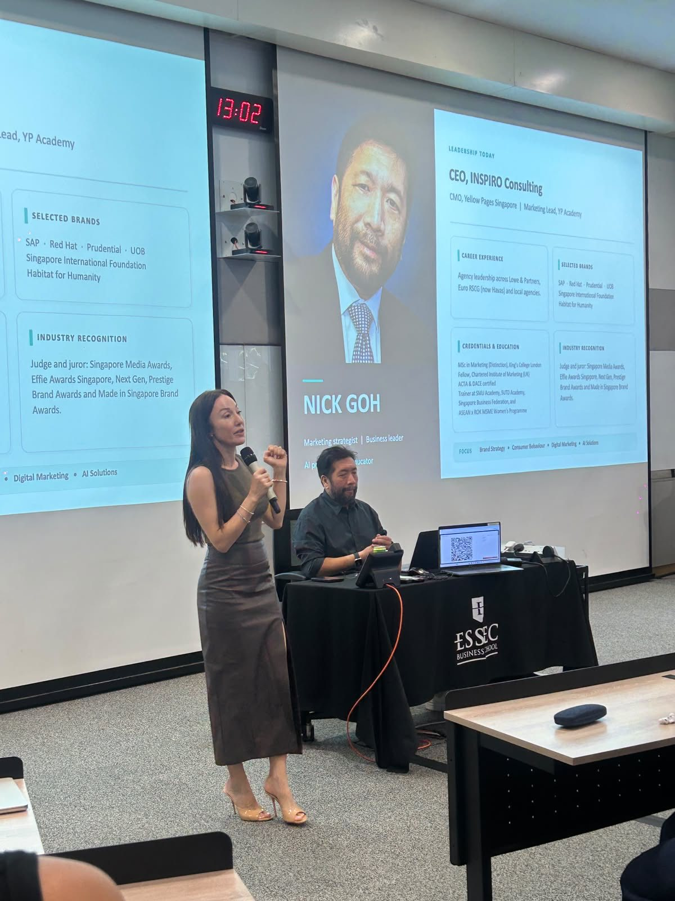
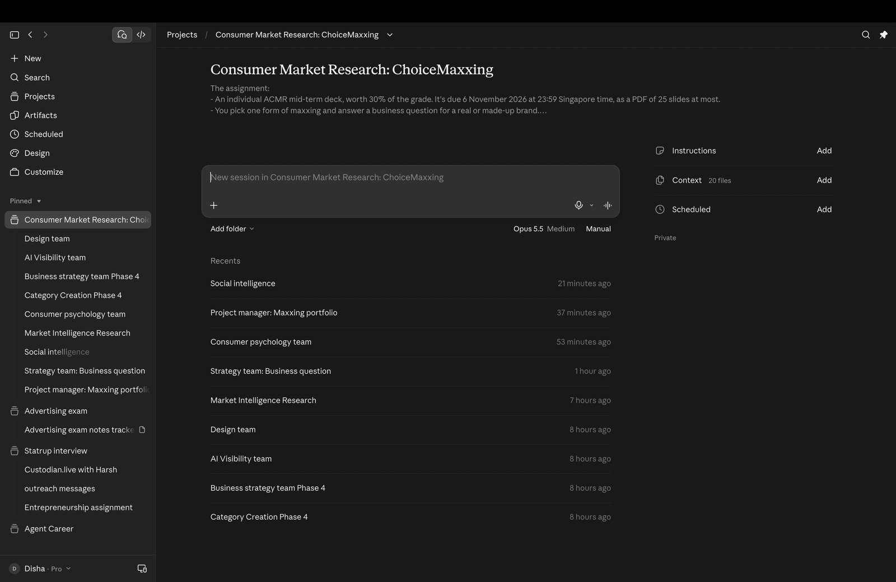
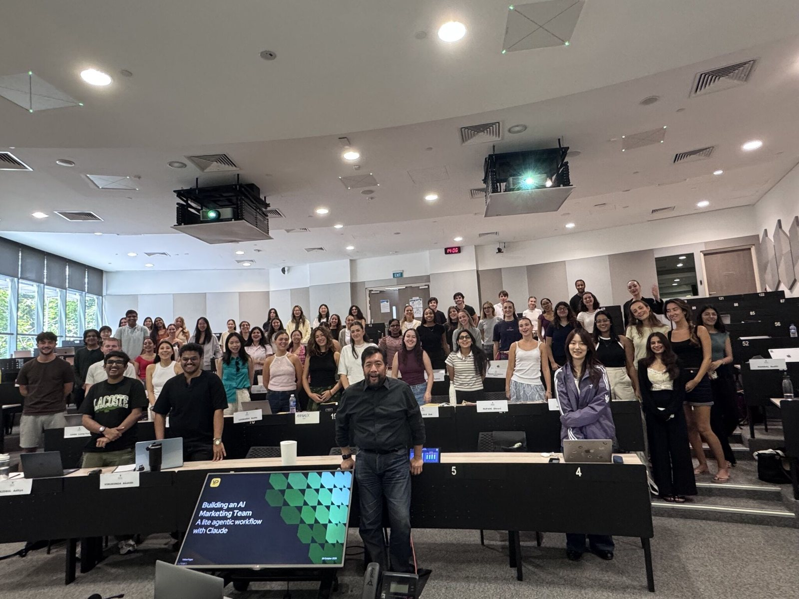

Group chat, but everyone’s AI.
One brief. Six AI roles. One connected workflow.
In this session, Nick Goh showed us how Claude Projects can turn separate AI conversations into a virtual marketing team.
Meet Nick Goh
LinkedIn ↗CEO, INSPIRO Consulting · CMO, Yellow Pages Singapore · Marketing Lead, YP Academy
Stop thinking in prompts. Start thinking in teams.
Nick used a fictional brief for The Row: launch an eco-friendly bag. Each Claude conversation played one role, and the work moved from one role to the next, from the first email to the final creative.
Fictional class brief. Not affiliated with The Row.
- 01The brief landsA campaign request arrives by email.
- 02Brief WriterTurns the email into a structured marketing brief.
- 03Brief ValidatorChecks the brief in a new chat, with fresh eyes.
- 04StrategistUses research and project documents to shape the big idea. Research tools like SOMIN and SOMONITOR, from the Singapore company SOMIN.ai, help compare competitors.
- 05YouApprove the work and save it to the knowledge base. The human stays in charge.
- 06Creative teamBuilds the messaging for each platform and the key visuals, such as an Instagram post and story.
Claude Projects hold the knowledge and instructions. Skills give each role its own job.
A framework worth remembering.
CRAFT, a simple way to structure prompts.
Tap or hover a letterYour turn to direct.
“I turned this session into a game. You run the team.”
Can AI recognise originality, or does it reward what has worked before?
In class, the AI gave creative work a score, like a jury from BBH, Ogilvy and McCann would. But it scores by learning from trends and campaigns that already worked. If an idea breaks those patterns, could it be marked down for being different?
AI can judge creative work, but it shouldn’t define what creativity is.
What I took home.
- Think in workflows, not single prompts.
- Give AI context through documents and clear instructions.
- Use fresh eyes to challenge the first output.
- Keep human judgement at the centre of creative decisions.
The opportunity isn’t just to make AI do more work. It’s to rethink how we work with it.
What would your virtual team look like?

I tried it myself.
I tried it myself the same week. For Prof. Prashant’s consumer market research assignment, I built my own virtual team in a Claude Project: a project manager, research, social intelligence, consumer psychology, market intelligence, AI visibility, category creation, strategy and design. Each chat had one job and passed its work to the next.
